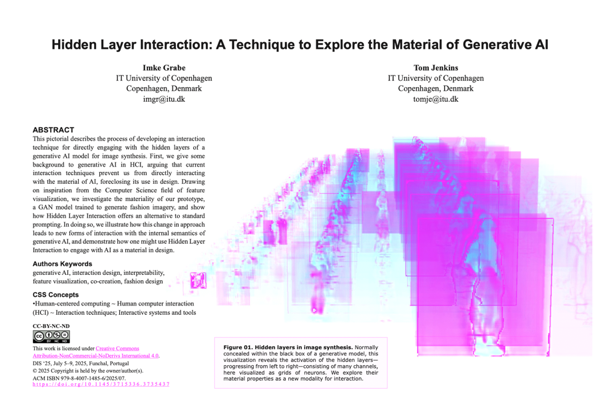
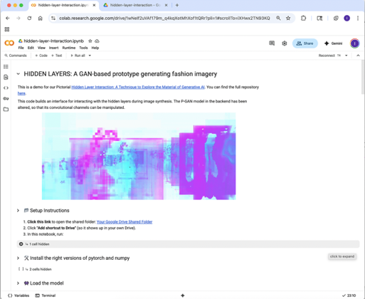
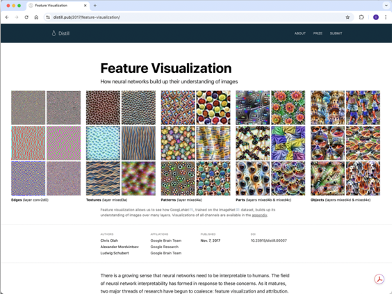
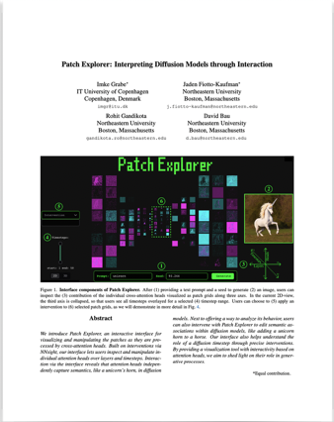
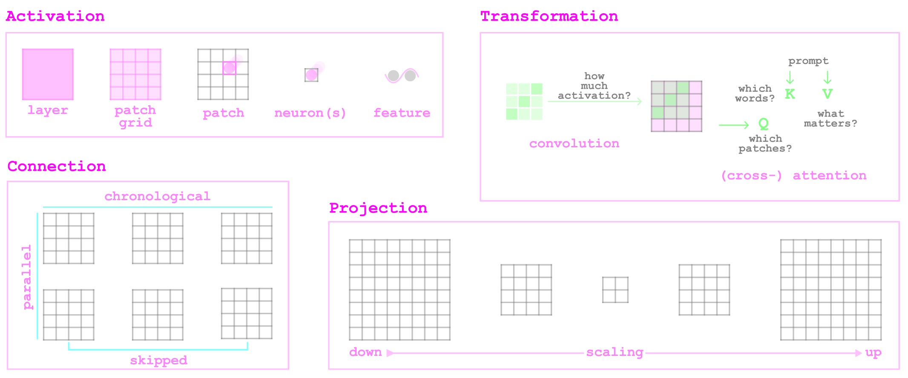
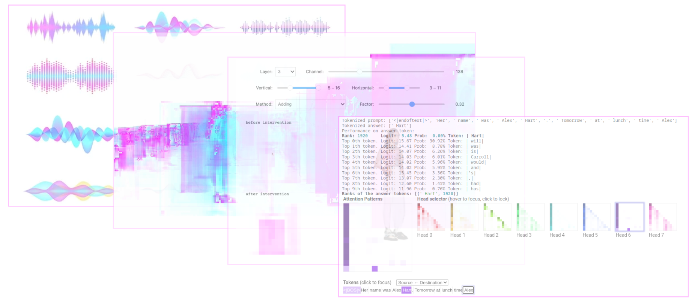
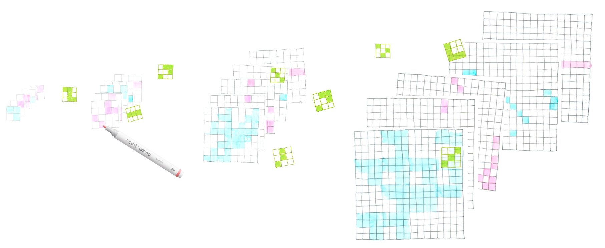
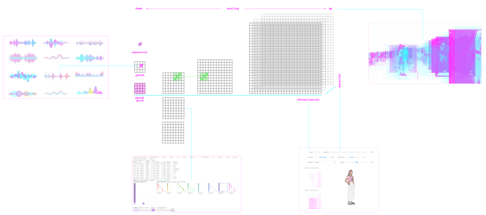

About
With the introduction of complex AI systems, generative technologies used in creative processes have become more obscured through their many hidden layers.
However, below the surface of AI technologies lie rich material characteristics, that we have yet to explore.
This workshop invites the community to explore alternative modes of creating with AI by approaching the hidden layers as a mechanistic material for design.
Existing XAI approaches often talk around the material of AI systems by trying to explain the behaviour of the hidden layers for reasons of efficiency, simplication, or user-friendliness.
To approach this gap, this workshop proposes to explore what better conditions for such manipulation might look like, especially for creative practitioners.
By centering the materiality of AI systems rather than explaining their opacity,
we propose to consider the hidden layers of neural networks as directly manipulable material for creation and explore on the interventions and interfaces that enable users to manipulate these systems' inner workings.
We prompt researchers ranging from the technical field of mechanistic interpretability to interaction design and beyond to explore the questions:
- How can you investigate the material properties of the hidden layers?
- How could you imagine interacting with the material hidden inside the layers of neural networks?
Call for Participation
To participate in the workshop, researchers and designers from various domains are invited to submit their work. We welcome submissions that explore co-creation via AI's hidden layers through any kind of modalities, such as music, textual, visual, voice, code-based, bio-signals, sensor data, and multimodal systems.
These can take the form of- material investigations of technical character (e.g., using interpretability methods) that explore the internal mechanistics of AI systems. For examples, see relevant research. Submissions can present results of material investigations, describe the development of tools like interfaces, artworks, or other products, or document the actions taken during the process. We also encourage submissions of failed approaches documenting the difficulty of entering the hidden layers of neural networks.
- interaction imaginaries of speculative character that propose alternative forms of co-creation. Submissions can draw on metaphors to existing digital or physical tools (e.g., the layers in Photoshop or looms) or present fictive design scenarios. Dystopian imaginaries that critically explore the potential negative effects of material gateways into AI's hidden layers are also encouraged.
Submissions are accepted in the following formats:

(e.g., see here)

(e.g., see here)

(e.g., see here)

(e.g., see here)
Special emphasis is placed on the representation and visualization in the submissions. As the modalities of the hidden layers are not necessarily natural to human understanding and perception, we invite participants to freely explore how to represent them in various forms. In addition to new works, we also encourage authors to submit previously published work (e.g., from technical papers or products) that can be contextualized under the theme of Hidden Layer Interaction.
Submission Deadline: April 23rd, 2026
Please submit your contributions via EasyChair here
Submissions do not need to be anonymized. Please use the corresponding templates for papers and pictorials.
Program
The activities of the workshop unfold across a full day, and move the participants from a shared grounding in a technical vocabulary to speculative representations and material explorations, and finally toward a collective cartography of interactions with the hidden layers.

How can we develop a shared language for what lies hidden within the layers of neural networks?
A technical vocabulary will serve as an entry into the hidden layers of AI.

participants present how they investigate the material of AI and imagine interactions with the hidden layers in various domains.
Through this, we aim to identify ways of tinkering with and thinking about the hidden layers as a material for design.


Tentative Schedule
The workshop takes place in person at Central Saint Martins, University of the Arts London on July 13th, 2026.
| Time | Activity |
|---|---|
| 9:00–9:30 | Welcome: Introduction of organizers and participants |
| 9:30–10:30 | Part 1: Entering the Hidden Layers through a shared vocabulary |
| 10:30–10:45 | Coffee break |
| 10:45–12:00 |
Part 2: Investigating the material and imagining interactions with it Participant Presentations (5 min presentation, 5 min questions) |
| 12:00–13:00 | Lunch |
| 13:00–14:30 | Part 3: Systemizing investigations and imaginaries through the vocabulary |
| 14:30–14:45 | Coffee break |
| 14:45–16:00 | Part 4: Creating a cartography of the Hidden Layers for co-creation |
| 16:00–16:30 | Goodbye: Concluding remarks and community building |
Contact
For more information and questions, please reach out to Imke:We are looking forward to receive your contributions!
Workshop Organizers
Imke Grabe is a Ph.D. Candidate at the IT University of Copenhagen's HCI and Design Section. Her project Hidden Layer Interaction proposes a novel technique for co-creating with generative AI via models' neurons. Bridging mechanistic interpretability and human-computer interaction, her work draws on methods from computer vision and design research to move beyond common prompting techniques towards an experiential understanding of AI's inner workings.
Gabrielle Benabdallah is an Alfred P. Sloan Postdoctoral Fellow at the University of Washington, building tools and conducting ethnographic research on how AI mediates scientific reading practices. Her work investigates the material conditions of knowledge production, from early writing technologies to machine learning, at the intersection of HCI, comparative media studies, and philosophy of technology.
Alayt Issak is a Ph.D. Candidate in Interdisciplinary Design and Media at Northeastern University. Her research spans AI, ethics, and creativity, incorporating HCI and creative practice methods. She develops a design philosophy for AI ethics applicable to co-creative system designers, policymakers, and researchers. Recipient of the Graduate Fellowship (2022–2024) as part of the Northeastern Ph.D. Network.
Ginevra Petrozzi is a Ph.D. Candidate at Eindhoven University of Technology within the Designing with Intelligence cluster. Her research explores AI, aesthetics, and uncertainty, drawing from fields such as divination and astrology. She is also an independent artist, exhibiting internationally.
James Pierce is an Associate Professor and Chair of Interaction Design at the University of Washington. His work focuses on interface design and the interactions between people, data, algorithms, and environments. He combines prototyping, qualitative methods, and critical perspectives to address social issues in computing technology.
Troy Nachtigall is an Assistant Professor in the Wearable Sense Lab at Eindhoven University of Technology. His work explores post-industrial design, personalization, and data-enabled technologies to enhance sensing, craft, and fabrication of embodied artifacts at the scale of the body.
Tom Jenkins is Associate Professor of Interaction Design at the IT University of Copenhagen, leading the IxD Lab. He combines community-based design research with cultural and critical theory to produce speculative artifacts that explore relationships between people and devices.
Jesse Josua Benjamin is an Assistant Professor in the Designing With Intelligence cluster at Eindhoven University of Technology. His work combines philosophy of technology and design research to investigate aesthetic potentials of emerging technologies, interrogating solidifying design conventions around AI technologies.